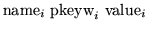
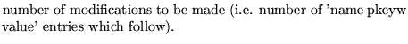
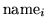
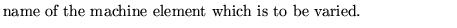
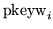
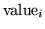
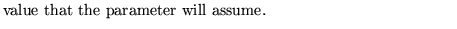

Next: Movement analysis
Up: Use and description of
Previous: Matrix computation
This operation enables user to change input parameters between successive operations.
It is particularly useful in simulations of injection and extraction
processes in conjunction with the kick elements and the TRACking
operation.
Input Format
MODIfication of input parameters...(up to 80 char)
n
 for  to n.
to n.
Parameter definitions
n 
 
 
 
Examples
The example comes from demo3 .
MODIFY SEXTUPOLE STRENGTH TO CHANGE CLOSED ORBIT POSITION.
1
SEXTUPOL K2 5.0,
Dobrin Kaltchev
2004-10-20